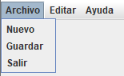

Informes de datos

A través de los paneles de informes es posible generar documentos personalizados
de los datos existentes en la base de datos que nos muestran información relevante sobre los objetos de estudio de cada uno.
Podemos distingir dos paneles de informes, uno para cada una de las entidades
importantes almacenadas en la base de datos.
- Informes de cómics:
- Informes de autores: